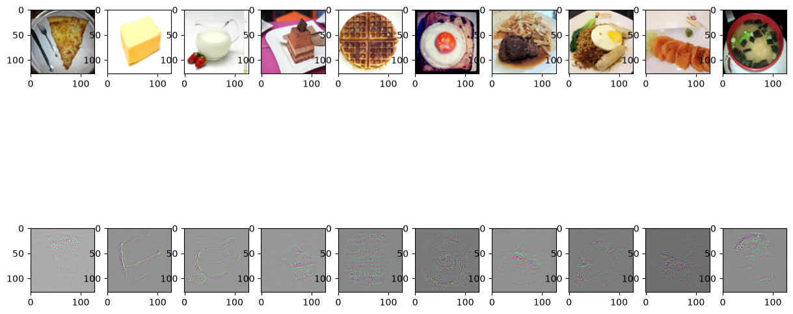
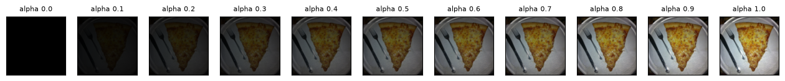
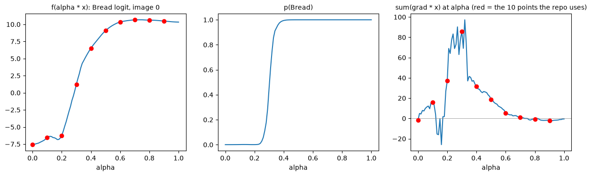
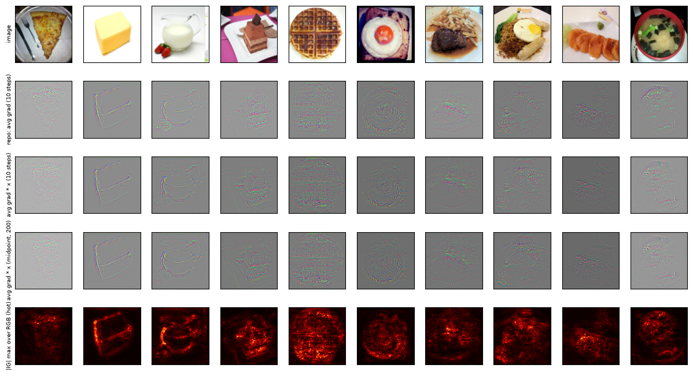
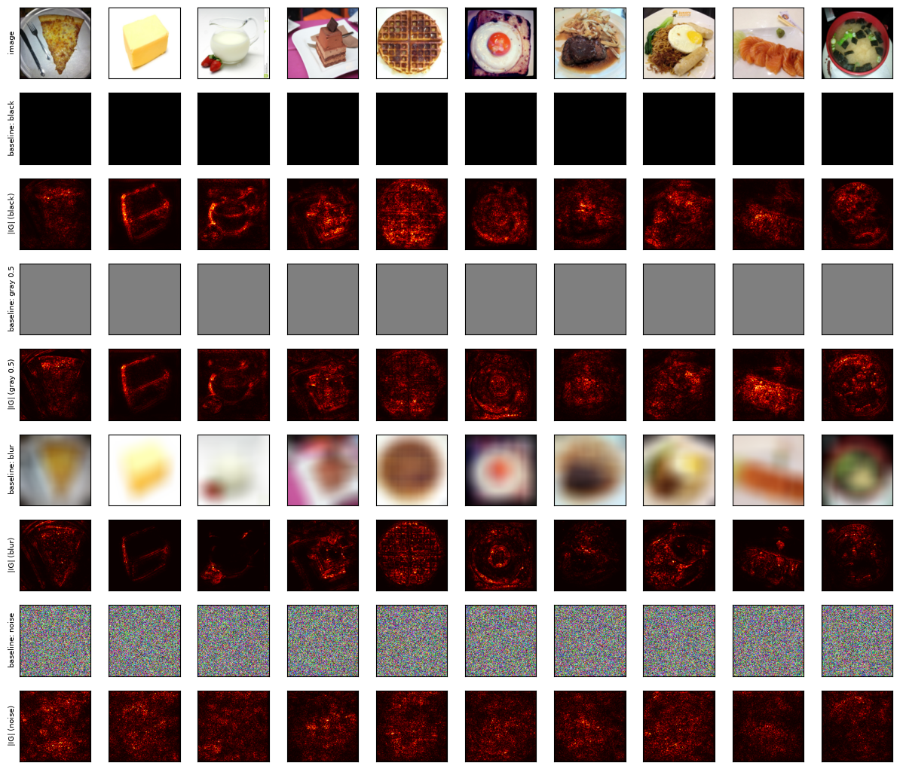

5.1 起點：integrated_gradients.png
第 0 章 0.5 節執行 explain_cnn.py 時，stdout 的最後一行是 saved ./output/integrated_gradients.png。它來自主程式的最後一行：
integrated_gradients(model, images, labels)三個參數和前幾章一樣：載入好的模型、10 張圖（形狀 (10, 3, 128, 128)）與 10 個標籤（第 1 章 1.4 節）。0.5 節的逐段計時裡，這一段只花了 0.7 秒，是五種方法裡最快的之一：10 張圖、每張 10 步，總共 100 次 forward 加 backward。先看輸出：

integrated_gradients.png：第一列原圖，第二列是程式算出的「Integrated Gradients」。名字加引號，是因為本章會說明它其實少乘了一項。只用眼睛看第二列：
- 每一格都是灰底，不是第 3 章 saliency map 那種黑底。
- 物體的邊緣有細的粉紅色與綠色線條：圖 1 奶油塊的稜線、圖 2 牛奶壺的輪廓與把手、圖 5 荷包蛋的同心圓、圖 4 鬆餅的格子都看得出來。
- 10 格的灰色深淺不一樣：圖 8 最暗，圖 0、2 偏淺。
這三點本章都會解釋。灰底和深淺不一是畫圖方式造成的（5.7 節），不是「那些地方沒有梯度」；彩色細紋則和第 3 章的 SmoothGrad 一樣，來自三個顏色通道各自畫出來（3.10 節）。
投影片只寫了三個字
投影片第 11 頁的全部文字如下（用 PDF 文字擷取工具抽出，逐字照錄）：
Integrated Gradients
Question 18 to 20
● Flexible baseline
Ref: https://arxiv.org/pdf/1703.01365.pdf除了標題和題號，只有一個提示：Flexible baseline（可以換的 baseline），以及論文連結。這篇論文是 Sundararajan、Taly、Yan 在 2017 年發表的〈Axiomatic Attribution for Deep Networks〉，Integrated Gradients 就是它提出的方法。baseline 是什麼、為什麼可以換，5.2 節與 5.9 節說明。和前幾章一樣，Q18–20 的題目本身在 Gradescope 上、不在 repo 裡（第 0 章 0.1 節〈30 題在問什麼〉），本書不知道這三題實際問什麼，所以不逐題作答，而是把方法、程式和實測結果講清楚。
5.2 想法：從基準圖走到原圖，沿途累積梯度
只看一點的梯度，會漏掉什麼
第 3 章 3.6 節比較過兩種 saliency map，其中一種是對標籤那一類的 logit 取梯度：∂zy/∂x，「每個像素動一下，這一類的分數變多少」。本章也對這個量取梯度（程式用目標類別的 logit，5.3 節）。為了寫式子方便，把「模型對目標類別輸出的 logit」記作 f：f(x) 就是把圖 x 送進模型、取出那一類的 logit。
梯度是局部的：它只告訴你在「現在這張圖」附近，像素動一點點時分數怎麼變。問題在於，分數可能早就不太會變了。以圖 0 為例（5.6 節的實測）：把原圖整體調暗到 60% 的亮度，Bread 的 logit 已經是 10.351，原圖本身是 10.331，幾乎一樣。這時候在原圖附近再把像素調亮或調暗一點，分數幾乎不動，梯度就小；但這不代表那些像素不重要，從全黑到 60% 亮度那一段，分數從 −7.580 升到了 10.351，功勞就藏在那一段裡。這種「輸入再增加，輸出已經不太變」的現象叫飽和（saturation）。第 3 章 3.6 節說的是 softmax 的飽和（機率頂在 1 附近），這裡是 logit 本身沿著亮度變化的飽和，兩者是不同的東西，但道理相同：在飽和的地方，局部梯度看不出整體的貢獻。
Integrated Gradients 想做的事叫做 attribution（歸因）：替每一個輸入像素算出一個數，表示它對輸出分數貢獻了多少。第 3 章介紹 Captum 時提過，這類方法統稱 attribution 方法；saliency map 也算一種，只是它用「局部梯度」當作貢獻。
baseline、直線路徑與 α
「貢獻了多少」要有一個比較的對象：相對於什麼？Integrated Gradients 先選一張基準圖，論文稱為 baseline，意思是「什麼資訊都沒有」的輸入，記作 x′。程式用的是全黑圖：每個像素、每個通道都是 0。目錄頁介紹過這個名字；它的分數 f(x′) 就是「什麼都沒看到時」模型給這一類的分數。
接著從 x′ 走到 x。最簡單的走法是一條直線路徑（straight-line path）：
α（alpha）是路徑上的位置：α = 0 就是 baseline，α = 1 就是原圖，中間是兩者的混合。baseline 是全黑圖（x′ = 0）時，式子簡化成 α · x：每個像素都乘上同一個比例，也就是把整張圖調暗。圖 5.2 是圖 0 沿著這條路徑的 11 個點：

論文的式子與 completeness
論文對第 i 個輸入值（某個像素的某個通道）定義的 Integrated Gradients 是：
右邊有兩個因子。積分那一項是「沿著路徑，f 對 xi 的梯度的平均」（α 從 0 到 1，區間長度是 1，積分就等於平均）；前面再乘上 xi − x′i，「這個像素從 baseline 到原圖總共變了多少」。平均的變化率 × 總變化量，就是這個像素帶來的分數變化。
這個定義最重要的性質叫 completeness（完整性）：
所有像素分到的功勞加起來，剛好等於「原圖的分數減掉 baseline 的分數」，一點不多、一點不少。為什麼？把路徑上的分數看成 α 的函數 g(α) = f(x′ + α(x − x′))。用第 3 章 3.2 節的鏈鎖律，g 對 α 的導數是每個像素「f 對它的偏微分 × 它隨 α 變化的速度」的總和，而直線路徑上第 i 個值隨 α 變化的速度就是 xi − x′i：
兩邊從 α = 0 積到 1。左邊：把「變化率」沿著 α 從 0 累積到 1，得到的就是總變化量，終點值減起點值（微積分基本定理；直覺上，每一小段 dα 上 g 變了 dg/dα × dα，全部加起來就是 g 從頭到尾變了多少），也就是 g(1) − g(0) = f(x) − f(x′)。右邊：有限項的和可以先積分再相加，而 xi − x′i 不隨 α 變、可以搬到積分外面，每一項就正好是上面 IGi 的定義，加起來是 Σi IGi。所以 completeness 不是近似，而是定義直接推得的等式。（嚴格說，ReLU 在 0、MaxPool 在兩個值相等時，斜率會突然改變，那些點上偏微分沒有定義；本書不展開；5.5 節的實測和這個等式一致到 3% 以內。）
反過來看，saliency map 沒有這個性質：只看 α = 1 那一點的梯度，乘上 x 加起來，和 f(x) − f(x′) 可以差很遠（圖 0 只有 −0.523，對 17.911，5.6 節）。
積分怎麼算：黎曼和
模型不是一條有公式的曲線，積分沒辦法直接算，只能在路徑上取有限個點，每個點算一次梯度，用「高度 × 寬度」的小長方形面積加起來近似。這叫黎曼和（Riemann sum）。把 0 到 1 切成 steps 段，每段寬 1/steps，每段的高度取段裡的哪一點，有幾種取法：
- 左端點：第 k 段（k = 0, 1, …, steps − 1）取 α = k/steps。steps = 10 時就是 α = 0.0, 0.1, …, 0.9，包含 0、不包含 1。程式用的就是這一種。
- 中點：取每段的正中間，α = (k + 0.5)/steps。steps = 10 時是 0.05, 0.15, …, 0.95。
每段寬度相同，所以黎曼和就是「這 steps 個點的梯度取平均」。圖 5.3 把整件事畫在一起：上排是路徑，下排是圖 0 實測的每一根長條。
下排每一根長條的高度，是「在那個 α 算出的梯度，乘上 x，所有像素加總」。為什麼要畫這個量？因為它正是上面 dg/dα 的式子（x′ = 0 時 x − x′ = x）：長條的高度就是那一點上分數隨 α 變化的速度，面積就是那一段路上分數的變化量。10 根長條的面積加起來，手算是 0.1 × (−1.569 + 15.961 + 37.113 + 85.861 + 31.470 + 18.761 + 5.274 + 1.025 − 0.595 − 2.039) = 19.126，和 5.5 節收斂表裡「左端點 10 步」的值一致；真正的答案 f(x) − f(0) 是 17.911。差的 1.2，就是只量 10 個點造成的誤差。
5.3 逐行讀 IntegratedGradients
程式把這個方法寫成一個 class 加一個畫圖函式。先看 class 的開頭：
"""## Integrated Gradients (Q18~20)"""
class IntegratedGradients():
def __init__(self, model):
self.model = model
self.gradients = None
# Put model in evaluation mode
self.model.eval()
def generate_images_on_linear_path(self, input_image, steps):
# Generate scaled xbar images
xbar_list = [input_image * step / steps for step in range(steps)]
return xbar_list- 第 230 行
self.model.eval()：切到推論模式，BN 用長期平均、Dropout 關掉。第 1 章 1.7 節說過：主程式載入權重後沒有呼叫model.eval()，每一個解釋方法都在開頭自己呼叫，這一行就是 Integrated Gradients 的那一次；少了它，train 模式下連 forward 都會改寫 BN 的長期平均。 - 第 234 行就是直線路徑。
range(steps)產生 0 到 steps − 1，所以 xbar（x̄，路徑上的圖）是input_image * 0/10、* 1/10、……、* 9/10，也就是 α = 0.0 到 0.9。式子裡沒有 baseline，因為 baseline 是 0：x′ + α(x − x′) 在 x′ = 0 時就是 α · x。step = 0 那張input_image * 0就是全黑圖本身。α = 1（原圖）不在清單裡，這是左端點黎曼和的取法。
第 228 行的 self.gradients 只是暫存最後一次的梯度，外面沒有人讀它。接著是每個點算一次梯度的函式：
def generate_gradients(self, input_image, target_class):
# We want to get the gradients of the input image
input_image.requires_grad = True
# Forward
model_output = self.model(input_image)
# Zero grads
self.model.zero_grad()
# Target for backprop
one_hot_output = torch.zeros(1, model_output.size()[-1]).cuda()
one_hot_output[0][target_class] = 1
# Backward
model_output.backward(gradient=one_hot_output)
self.gradients = input_image.grad
# [0] to get rid of the first channel (1,3,128,128)
gradients_as_arr = self.gradients.cpu().numpy()[0]
return gradients_as_arr逐行看：
- 第 239 行把 xbar 標記成需要梯度。第 3 章用的是
requires_grad_()方法（3.3 節），這裡直接設屬性，效果相同。直接設屬性只能用在葉節點（不是由其他需要梯度的張量算出來的張量）上，否則 PyTorch 會報錯。xbar 是images.cuda()乘上一個數得到的，而images本身不需要梯度，所以 xbar 沒有計算記錄（autograd 在 forward 時記下的運算，第 4 章 4.3 節），是葉節點，可以設。 - 第 241 行 forward，
model_output的形狀是(1, 11)：一張圖、11 個 logit。 - 第 243 行
self.model.zero_grad()清掉模型參數的.grad。第 3 章 3.3 節說過.grad會累加；第 3、4 章的 backward 也會寫進參數的.grad，這一行把它們一併清掉。但本章要讀的是輸入的.grad，它不受這一行影響，也不需要清：每個 xbar 都是第 234 行新產生的張量，.grad一開始就是空的，不會和上一個 xbar 的累加在一起。 - 第 245–246 行做一個 one-hot 向量：形狀
(1, 11)，全部是 0，只有目標類別那一格是 1。target_class是主程式傳進來的labels[i]，一個 0 維的張量，可以直接當索引用。目標類別是標籤，不是模型的預測；這 10 張圖模型全部答對（第 1 章 1.6 節），所以兩者相同。 - 第 248 行
backward(gradient=one_hot_output)：第 3 章的loss.backward()是從一個純量（loss）往回算；model_output有 11 個數，不是純量，PyTorch 不知道要對「哪個數」取梯度，所以要傳gradient=：一個和輸出同形狀的權重向量 v，backward 算的是 Σj vj · ∂zj/∂x。v 是 one-hot，只有目標類別 c 那一項留下來，結果就是 ∂zc/∂x：對目標類別的 logit 取梯度，不經過 softmax，也不是 loss。這和第 3 章 3.6 節「對標籤 logit 取梯度」是同一個量，寫法model_output[0, target_class].backward()等價。 - 第 249–251 行取出輸入的梯度
(1, 3, 128, 128)，搬到 CPU、轉成 NumPy，再用[0]取第一個元素，變成(3, 128, 128)。
註解寫錯了：[0] 去掉的是批次維度
第 250 行（以及後面第 264 行）的註解寫「[0] to get rid of the first channel」，去掉第一個 channel。實際上 (1, 3, 128, 128) 的第一維是批次（這一批只有 1 張圖），[0] 去掉的是批次維度，三個顏色通道都還在，結果是 (3, 128, 128)。如果真的去掉了一個 channel，第 280 行就畫不出彩色圖了。
再來是把 10 個點的梯度合起來的函式：
def generate_integrated_gradients(self, input_image, target_class, steps):
# Generate xbar images
xbar_list = self.generate_images_on_linear_path(input_image, steps)
# Initialize an image composed of zeros
integrated_grads = np.zeros(input_image.size())
for xbar_image in xbar_list:
# Generate gradients from xbar images
single_integrated_grad = self.generate_gradients(xbar_image, target_class)
# Add rescaled grads from xbar images
integrated_grads = integrated_grads + single_integrated_grad / steps
# [0] to get rid of the first channel (1,3,128,128)
return integrated_grads[0]- 第 258 行的累加器和輸入同形狀，
(1, 3, 128, 128)。np.zeros預設的資料型別是 float64（64 位元浮點數），所以累加是用 float64 做的（和第 3 章 SmoothGrad 的累加器一樣）；梯度本身是 float32。 - 第 263 行每次加上「這一點的梯度 ÷ steps」，10 次加完就是 10 個梯度的平均，也就是 5.2 節的左端點黎曼和。注意左右兩邊的形狀不同：累加器是
(1, 3, 128, 128)，single_integrated_grad已經被第 251 行去掉批次維度，是(3, 128, 128)。兩個形狀不同的陣列能相加，靠的是 NumPy 的廣播（broadcasting）：從最後一維開始往前對齊，每一維要嘛相同、要嘛其中一個是 1 或根本沒有這一維，缺的那一維就當作把陣列沿著它複製。這裡(3, 128, 128)前面缺一維，被當成(1, 3, 128, 128)，結果仍是(1, 3, 128, 128)。 - 第 265 行再用
[0]去掉批次維度（註解同樣寫成 channel），回傳(3, 128, 128)。
到這裡就結束了：回傳的是「10 個點的梯度平均」，沒有乘上 (x − baseline)。對照 5.2 節的式子，程式只算了積分那一項，少了前面的 xi − x′i。baseline 是 0，所以少乘的就是 x 本身。本書把程式的輸出稱為路徑平均梯度，把乘上 x 之後的結果稱為「論文的 IG」。
最後是主程式呼叫的函式：
def integrated_gradients(model, images, labels):
images = images.cuda()
IG = IntegratedGradients(model)
integrated_grads = []
for i, img in enumerate(images):
img = img.unsqueeze(0)
integrated_grads.append(IG.generate_integrated_gradients(img, labels[i], 10))
fig, axs = plt.subplots(2, len(images), figsize=(15, 8))
for i, img in enumerate(images):
axs[0][i].imshow(img.cpu().permute(1, 2, 0))
for i, img in enumerate(integrated_grads):
axs[1][i].imshow(np.moveaxis(normalize(img), 0, -1))
save_fig(fig, 'integrated_gradients.png')- 第 269 行把 10 張圖搬到 GPU。
.cuda()產生的是一份新的複本，不需要梯度，所以第 234 行做出來的 xbar 才會是葉節點。 - 第 274 行
unsqueeze(0)把一張圖(3, 128, 128)補上批次維度變成(1, 3, 128, 128)（第 3 章 3.7 節）。所以 IG 是一張一張算的，不像第 3 章的 saliency map 一次算 10 張。 - 第 275 行把步數寫死成 10。
- 第 278 行畫原圖，和前幾章相同（
permute(1, 2, 0)，第 1 章 1.5 節）。 - 第 280 行先
normalize（第 1 章 1.5 節：整個陣列一起 min-max 到 0–1），再用np.moveaxis(…, 0, -1)：把第 0 軸移到最後，(3, 128, 128)變成(128, 128, 3)。這是 NumPy 版的permute(1, 2, 0)，因為這時候資料已經是 NumPy 陣列，不是張量。imshow收到(H, W, 3)就當作 RGB 彩色圖畫，不套色表（第 3 章 3.10 節），所以第二列是彩色的。
第 4 章留下的兩個問題，在這裡兌現一句：filter_explain 在第 203 行把 hook 拿掉了，所以本章的 forward 不受影響；如果第 4 章的優化器拿到的是模型權重（第 4 章自我測驗第 2 題），本章用到的就是被改過的模型，算出來的東西和原本完全無關。
5.4 程式少乘的那一項：completeness 實測
completeness 說：論文的 IG 加起來應該等於 f(x) − f(0)。本書把 10 張圖的這幾個量都算出來（f(0) 是全黑圖的目標類別 logit）：
| 圖 | 類別 | f(x) | f(0) | f(x) − f(0) | Σ 程式輸出 | Σ 程式輸出 × x | |程式輸出| 最大值 | 負值比例 |
|---|---|---|---|---|---|---|---|---|
| 0 | 0 Bread | 10.331 | −7.580 | 17.911 | 0.273 | 19.119 | 2.010 | 0.499 |
| 1 | 1 Dairy product | 19.787 | −3.327 | 23.114 | 9.356 | 24.851 | 0.898 | 0.499 |
| 2 | 1 Dairy product | 7.808 | −3.327 | 11.135 | 8.418 | 6.439 | 1.654 | 0.504 |
| 3 | 2 Dessert | 9.024 | −3.658 | 12.682 | −7.373 | 10.975 | 1.893 | 0.504 |
| 4 | 2 Dessert | 12.216 | −3.658 | 15.873 | 20.791 | 17.960 | 1.747 | 0.498 |
| 5 | 3 Egg | 12.389 | −1.921 | 14.310 | 9.317 | 12.767 | 1.105 | 0.496 |
| 6 | 5 Meat | 22.948 | −3.364 | 26.311 | 1.506 | 23.017 | 2.468 | 0.504 |
| 7 | 6 Noodles/Pasta | 11.446 | −5.953 | 17.399 | −7.293 | 16.557 | 1.935 | 0.498 |
| 8 | 8 Seafood | 13.004 | −3.524 | 16.528 | −7.785 | 12.057 | 1.757 | 0.515 |
| 9 | 9 Soup | 14.110 | −0.412 | 14.522 | 14.499 | 16.327 | 3.025 | 0.498 |
「Σ 程式輸出」是程式回傳的 (3, 128, 128) 陣列全部加起來；「Σ 程式輸出 × x」是先逐元素乘上原圖再加起來，也就是論文的 IG 的總和（10 步左端點）。圖 0 的 19.119 和圖 5.3 的 19.126 差在小數第 2 位，是兩支程式分別在 GPU 上算的結果，5.5 節說明。負值比例是程式輸出裡小於 0 的元素占多少。
關於 f(x) 這一欄：它是一張一張單獨算的 logit，因為 IG 本來就是一張一張算的。第 1 章 1.6 節的預測表是 10 張一起算的，兩邊在小數第 2–3 位對不上，例如圖 3：第 1 章 9.011，這裡 9.024。第 1 章 1.6 節〈小數第 3 位會變〉說明過原因（GPU 依批次大小選用不同的計算方法），兩邊都是對的。
讀這張表與圖 5.4：
- 程式輸出的總和和 f(x) − f(0) 毫無關係。目標都是正的（11.135 到 26.311），程式輸出的總和卻從 −7.785 散到 20.791，有 3 張是負的。原因很直接：程式輸出是「梯度」，單位是「分數 ÷ 像素值」，不是「分數」，把梯度加起來本來就不該等於分數的差。而且程式輸出大約一半正、一半負（負值比例 0.496 到 0.515），加總時大量互相抵消，剩下多少幾乎是偶然。
- 乘上 x 之後，10 張都落在差值附近。這就是 completeness：每個像素的「平均梯度 × 它從 0 到原值的變化量」，加起來就是分數的變化。
- 但 10 步的誤差可以很大。圖 2 是 6.439 對 11.135，少了 4 成；圖 8 是 12.057 對 16.528，少了 2 成 7（手算）。乘上 x 只是把「該乘的」乘回去，積分仍然只用 10 個點近似，這 10 個點量得準不準是另一回事，5.5、5.6 節討論。
這就是目錄頁〈先說在前面〉那段話的實測版：程式少乘了「原圖減掉基準圖」，所以畫出來的是「沿途梯度的平均」，失去了 completeness。這一條也列在教學大綱〈讀 code 不盡信文件〉的第 4 項：IG 少乘 (x − baseline)、baseline 固定為全黑、α 不含 1。
全黑圖本身被判成什麼
表裡 f(0) 有重複：圖 1、2 都是 −3.327，圖 3、4 都是 −3.658。這不是巧合，也沒有更深的意義：baseline 對每一張圖都是同一張全黑圖，f(0) 只取決於看哪一個類別，同類別的兩張圖當然一樣。把全黑圖送進模型，11 個 logit 是：
[−7.580, −3.327, −3.658, −1.921, −7.684, −3.364, −5.953, −6.349, −3.524, −0.412, −0.420]（依類別 0–10 排列，本書另外量的。）最大的是類別 9 Soup（−0.412），模型把全黑圖判成湯，softmax 機率 0.4147；類別 10 Vegetable/Fruit（−0.420）緊跟在後。這對圖 9（Soup）有一個影響：它的 f(0) 是 10 張裡最高的，所以 f(x) − f(0) 是 14.522，比它自己的 f(x) 14.110 只多一點點。「什麼都沒看到」的時候，模型就已經有點偏向 Soup，圖 9 能分到的功勞就少了這一截。
5.5 步數與取點方式：收斂
既然 10 步的誤差可以很大，那多取一些點呢？本書把「路徑平均梯度 × x 的總和」用兩種取點方式（左端點、中點）、三種步數（10、50、200）各算一次，目標都是 f(x) − f(0)：
| 圖 | 目標 | 左 10 | 左 50 | 左 200 | 中點 10 | 中點 50 | 中點 200 |
|---|---|---|---|---|---|---|---|
| 0 | 17.911 | 19.126 | 16.715 | 17.973 | 15.750 | 18.146 | 17.851 |
| 1 | 23.114 | 24.856 | 23.715 | 23.272 | 23.412 | 23.216 | 23.065 |
| 2 | 11.135 | 6.448 | 11.145 | 11.296 | 15.623 | 11.569 | 10.932 |
| 3 | 12.682 | 10.974 | 13.068 | 12.751 | 12.978 | 12.478 | 12.627 |
| 4 | 15.873 | 17.966 | 15.619 | 15.662 | 11.824 | 16.117 | 15.922 |
| 5 | 14.310 | 12.770 | 14.333 | 14.307 | 13.735 | 14.245 | 14.216 |
| 6 | 26.311 | 23.023 | 26.605 | 26.361 | 23.739 | 26.301 | 26.101 |
| 7 | 17.399 | 16.577 | 16.831 | 16.957 | 16.268 | 16.183 | 17.565 |
| 8 | 16.528 | 12.078 | 17.046 | 16.508 | 18.500 | 15.885 | 16.534 |
| 9 | 14.522 | 16.341 | 15.205 | 14.563 | 10.629 | 14.299 | 14.681 |
「左 10」就是程式的取點方式再乘上 x，和 5.4 節表中的「Σ 程式輸出 × x」是同一個量，但這張表是本書用自己的程式重算的，兩者在小數第 2 位不同（例如圖 0：19.126 對 19.119），差異來自 GPU 的浮點運算。本書核對過：這支重算程式和 repo 的 class 對圖 0 算出的路徑平均梯度，最大只差 3.0 × 10−3（repo 結果的最大值是 2.01），兩者數學上相同。
讀這張表：
- 200 步時，10 張都收斂到目標的 3% 以內。左端點誤差最大的是圖 7（16.957 對 17.399，約 2.5%）；中點最大的是圖 2（10.932 對 11.135，約 1.8%）。completeness 在步數夠多時確實成立。
- 10 步時誤差很大，而且不一定往同一個方向偏。左端點 10 步的誤差從圖 7 的約 5%（偏低）到圖 2 的約 42%（偏低），圖 0、1、4、9 則是偏高；10 張裡有 7 張差超過 10%（手算）。
- 10 步時，中點不一定比左端點好。圖 0、4、7、9 的中點 10 步反而比左端點 10 步差，例如圖 4：左端點 17.966（差 2.1），中點 11.824（差 4.0）。50 步以上時兩者都接近目標。
同一個數字，兩次執行
教學大綱引用過圖 0 的中點法收斂：「10 步 15.704、50 步 18.141、200 步 17.851」，那是本書第一次執行（產生本書配圖的那一次；配圖放在 docs/HW09/img/，第 0 章 0.6 節）量到的。上表是本章另外的一次執行，中點 10 步是 15.750、50 步 18.146、200 步 17.851。10 步和 50 步在不同次執行間有差，原因同樣是 GPU 的浮點運算（第 0 章 0.6 節提過 integrated_gradients.png 每次重跑都有極細微的差異）；200 步兩次相同。本章其他數字都取自後面這一次，兩組不混用。
5.6 圖 0 的路徑：飽和，以及 10 步為什麼不夠
為什麼 10 步可以差到 4 成？把圖 0 的路徑切細來看：α 從 0 到 1 取 101 個點，每一點量三個量：

程式實際用到的 10 個 α（以及程式不算的 α = 1.0）的數值：
| α | f(αx) | p(Bread) | 判成 | |梯度| 最大值 | Σ 梯度 × x |
|---|---|---|---|---|---|
| 0.0 | −7.580 | 0.0003 | 9 | 0.164 | −1.569 |
| 0.1 | −6.563 | 0.0010 | 9 | 1.627 | 15.961 |
| 0.2 | −6.240 | 0.0007 | 5 | 2.529 | 37.113 |
| 0.3 | 1.240 | 0.4540 | 0 | 3.971 | 85.861 |
| 0.4 | 6.508 | 0.9944 | 0 | 4.302 | 31.470 |
| 0.5 | 9.083 | 1.0000 | 0 | 3.965 | 18.761 |
| 0.6 | 10.351 | 1.0000 | 0 | 3.369 | 5.274 |
| 0.7 | 10.649 | 1.0000 | 0 | 3.100 | 1.025 |
| 0.8 | 10.612 | 1.0000 | 0 | 2.404 | −0.595 |
| 0.9 | 10.485 | 1.0000 | 0 | 2.620 | −2.039 |
| 1.0（程式不算） | 10.331 | 1.0000 | 0 | 2.020 | −0.523 |
「判成」是那張變暗的圖被模型判成哪一類：0 是 Bread、5 是 Meat、9 是 Soup。看圖與表：
- 分數主要在 α 0.2 到 0.4 之間升起來。logit 從 α = 0.2 的 −6.240 跳到 0.4 的 6.508。α = 0.30 時第一次判成 Bread，α = 0.39 時 p(Bread) 已經 ≥ 0.99。α 0.6 之後 logit 持平在 10.3 到 10.6，0.7 附近最高（10.649），之後略降，原圖是 10.331。
- α ≥ 0.6 這一段已經飽和。圖再亮，分數幾乎不變，所以這一段的「梯度 × x」總和接近 0，甚至略為負（0.8 以後）。注意這時候梯度本身並不小，|梯度| 最大值仍在 2.0 到 3.4 之間；只是正負互相抵消，整體的「變亮對分數的影響」接近 0。
- 只看原圖那一點，會錯過整件事。α = 1.0 的「梯度 × x」總和是 −0.523，負的；如果只用原圖的梯度（就是第 3 章 3.6 節 logit 版 saliency map 用的那個梯度）來分功勞，總和離 17.911 差得很遠。IG 把 α 0.2–0.4 那段「分數真正在變」的梯度也算進來，這就是論文說它能處理飽和的方式。以上是本書從這張表推論的，不是另外的實驗。
- 右圖的曲線很尖，而且是鋸齒狀的。峰在 α ≈ 0.2 到 0.35 之間，最高約 97；α 0.15 附近還有一段跌到約 −25。程式的 10 個紅點裡，落在峰上的只有 α = 0.2 和 0.3 兩個。左端點黎曼和假設「每一段寬 0.1 的高度都等於左端點的高度」，曲線在一段之內變化這麼大時，這個假設就不準。本書推論這是 10 步誤差大的原因：誤差取決於那幾個點剛好落在峰的哪裡，所以有時偏高、有時偏低，換成中點也不一定比較好（5.5 節）。
（「α 0.2–0.4 那段貢獻最多」可以從表直接讀：10 根長條的高度加起來是 191.262（乘上寬度 0.1 才是圖 5.3 的面積 19.126），其中 0.2、0.3 兩根就占了 64%，手算。但這只是 10 個點的讀法，101 點的曲線才是比較完整的樣子。）
其他 9 張圖的路徑
每張圖「升起來」的位置不同。p(標籤) 第一次 ≥ 0.5 的 α：圖 0 0.31、圖 1 0.13、圖 2 0.17、圖 3 0.14、圖 4 0.09、圖 5 0.42、圖 6 0.12、圖 7 0.41、圖 8 0.25、圖 9 0.02。圖 9 特別早，因為全黑圖本身就被判成 Soup（α = 0 時 p(Soup) 已經是 0.4147；其他 9 張在 α = 0 時 p(標籤) 只有 0.0003 到 0.0917）。路徑也不一定單調：圖 2 在 α = 0.17 已經過 0.5，到 α = 0.5 時 p 卻掉回 0.0036；圖 4 在 α = 0.09 過 0.5，α = 0.5 時 p 是 0.0000。兩張在 α = 0.9 時都回到 0.9997 以上。路徑上起伏越多，只取 10 個點就越容易漏掉，這和圖 2 在 5.5 節的大誤差相符（推論）。
5.7 為什麼是灰底：normalize 保留了正負號
回到圖 5.1 的灰底。第 280 行畫圖前做的是 normalize(img)：對 (3, 128, 128) 整個陣列一起做 min-max，最小值對到 0、最大值對到 1。第 3 章的 saliency map 先取了絕對值，最小值就是 0，0 對到 0，所以「沒有梯度」的地方是黑的；這裡沒有取絕對值，程式輸出有一半是負的，最小值是負數，值 0 就被對到中間某個灰。
以圖 0 為例：程式輸出最小 −2.010、最大 0.983，值 0 被對到 (0 − (−2.010)) ÷ (0.983 − (−2.010)) ≈ 0.672。圖 3 是 −1.893 到 1.293，0 被對到約 0.594。三個通道都是 0 的像素，畫出來就是 RGB 三個值都等於 0.672 的灰。正的值比這個灰亮，負的值比較暗；同一個像素的 R、G、B 三個通道正負不一定相同，畫出來就帶顏色，這就是物體邊緣那些粉紅、綠色的細紋。
每張圖的最小值、最大值不同，0 被對到的灰也不同，所以 10 格的灰底深淺不一（圖 0 偏淺、圖 8 最暗），這是本書從上面的算式推論的。灰底不代表「那些地方沒有梯度」，只代表「那些地方的值接近 0」；而且灰的深淺只反映這張圖的正負值範圍，不能拿來在圖與圖之間比較。
5.8 乘上 x 之後，圖變了多少
5.4 節說少乘 x 讓總和完全對不上。那圖呢？本書把四種版本並排畫出：

只用眼睛看，第二、三、四列幾乎看不出差別：都是灰底、彩色細紋，輪廓在同樣的位置。把各自 normalize 之後的圖逐像素算相關係數（第 3 章 3.6 節介紹的 Pearson 相關係數）：
| 圖 | 0 | 1 | 2 | 3 | 4 | 5 | 6 | 7 | 8 | 9 |
|---|---|---|---|---|---|---|---|---|---|---|
| 程式輸出 vs × x（都是左 10 步） | 0.940 | 0.980 | 0.948 | 0.932 | 0.905 | 0.936 | 0.896 | 0.895 | 0.918 | 0.842 |
| × x：左 10 步 vs 中點 200 步 | 0.983 | 0.995 | 0.994 | 0.995 | 0.994 | 0.992 | 0.990 | 0.986 | 0.994 | 0.994 |
所以少乘 x 這件事要分兩面講：
- 對總和（completeness）影響很大：程式輸出的總和和 f(x) − f(0) 毫無關係（5.4 節）。
- 對圖的樣子影響很小：相關係數 0.84 到 0.98，畫出來肉眼分不太出來。
為什麼？本書的推論是：x 的值在 0 到 1 之間，同一個區域裡的像素值差不多，乘上去主要是整體縮放，normalize 又把縮放消掉了；變化比較大的是很暗的像素（x 接近 0），乘上 x 之後被壓下去。這個推論本書沒有逐像素驗證。另外，10 步和 200 步的圖相關 0.98 以上：步數不夠讓總和不準（5.5 節），對圖的影響卻很小。
第五列換了畫法：取絕對值、RGB 取最大，再用 hot 色表（第 3 章 3.1 節的 saliency map 畫法），黑底，物體輪廓以紅黃亮點呈現：奶油塊的方框、牛奶壺與草莓、荷包蛋的圓、整片鬆餅、湯碗的圓圈。這和第二到四列是同一份資訊，只是不再區分正負，看起來清楚得多。程式保留正負號、用彩色畫，是原版 notebook 的選擇；兩種畫法回答的問題不同（「往哪個方向影響」對「影響多大」），沒有哪一個是錯的。
5.9 Flexible baseline：換一張基準圖
投影片第 11 頁唯一的提示是 Flexible baseline。程式的 baseline 寫死在第 234 行（乘上 α 的是原圖本身，等於假設 baseline 是 0），想換就要改成 x′ + α(x − x′)，最後也要乘上 (x − x′)。本書照論文的定義實測了四種 baseline，全部用中點法 200 步、乘上 (x − baseline)：
- black：全 0，程式用的。
- gray 0.5：每個值都是 0.5 的灰圖。
- blur：把原圖做 31×31 的平均模糊（每個像素換成周圍 31×31 塊的平均，邊界用最外圈的像素補）。
- noise：0 到 1 均勻分佈的雜訊圖（第 4 章的白雜訊；固定種子
torch.manual_seed(0)，每張圖抽一次）。

每種 baseline 的分數 f(baseline)、目標 f(x) − f(baseline) 與歸因總和 Σ（格式：f(b)／差／Σ）：
| 圖 | black | gray 0.5 | blur | noise |
|---|---|---|---|---|
| 0 | −7.580／17.911／17.851 | −4.437／14.768／14.797 | −5.787／16.119／16.150 | −17.982／28.314／28.217 |
| 1 | −3.327／23.114／23.065 | −2.459／22.246／22.243 | 6.014／13.773／13.845 | −15.152／34.939／34.588 |
| 2 | −3.327／11.135／10.932 | −2.459／10.267／10.251 | 4.192／3.616／3.627 | −16.697／24.504／24.243 |
| 3 | −3.658／12.682／12.627 | 2.108／6.916／6.825 | 0.190／8.834／8.759 | −4.599／13.623／13.659 |
| 4 | −3.658／15.873／15.922 | 2.108／10.108／9.843 | −0.926／13.142／13.265 | −4.075／16.290／16.364 |
| 5 | −1.921／14.310／14.216 | −7.876／20.265／20.250 | −4.505／16.894／16.806 | −9.472／21.861／21.824 |
| 6 | −3.364／26.311／26.101 | −6.137／29.085／29.001 | −14.139／37.086／37.058 | −10.125／33.073／32.933 |
| 7 | −5.953／17.399／17.565 | −10.020／21.467／21.385 | −18.690／30.136／29.945 | −20.525／31.971／32.088 |
| 8 | −3.524／16.528／16.534 | −0.940／13.944／13.962 | −4.236／17.241／17.271 | −10.350／23.354／23.265 |
| 9 | −0.412／14.522／14.681 | −4.934／19.044／19.042 | 0.797／13.313／13.331 | −10.752／24.862／24.669 |
讀這張表：
- 四種 baseline 都滿足 completeness。每一格的 Σ 和差值都在 3% 以內，最大的是圖 4 gray 0.5（9.843 對 10.108，約 2.6%）。completeness 是定義推得的，和 baseline 選什麼無關。
- 但「差值」本身隨 baseline 而變。同一張圖 2，相對於 blur 只有 3.616，相對於 noise 有 24.504。模糊過的牛奶壺，模型已經給了 Dairy product 4.192 分，原圖只比它多 3.616；雜訊圖則是 −16.697 分，原圖比它多很多。completeness 保證的是「功勞加起來等於差值」，而差值是「相對於 baseline」的。
- 歸因圖也隨 baseline 而變。把每種 baseline 的 |IG|（RGB 取最大）和 black 版逐像素算相關係數：gray 0.5 是 0.306 到 0.894，blur 0.201 到 0.627，noise 0.103 到 0.316。noise 的歸因和 black 版幾乎無關。
對照圖 5.7：black 與 gray 0.5 的 |IG| 相似，都是物體的輪廓；blur 的 |IG| 集中在邊緣與細紋，鬆餅的格子很清楚，奶油塊只剩細細的邊；noise 的 |IG| 散成滿版的細點，形狀最不清楚。blur 的結果有一個直覺的解釋（本書的推論）：模糊圖和原圖只差在細節，IG 分配的是「原圖比 baseline 多出來的分數」，功勞自然落在細節上。
所以 baseline 不是一個無關緊要的參數：它決定了「相對於什麼」來分功勞。「這個像素重要」這句話，完整的說法是「相對於把它換成 baseline 的值，這個像素讓分數多了多少」。全黑圖對這個模型也不是「什麼資訊都沒有」：模型把它判成 Soup（5.4 節）。投影片的 Flexible baseline 只有這三個字，Q18–20 實際問什麼本書不知道；但如果題目要你比較不同的 baseline，上面這些就是要注意的地方。
現在的做法
- 用現成的實作：目錄頁〈先說在前面〉提到的 Captum 內建
IntegratedGradients，它的attribute方法可以用baselines指定 baseline、target指定類別、n_steps指定步數，回傳的歸因已經乘上 (x − baseline)；加上return_convergence_delta=True還會回傳 completeness 的誤差（歸因總和和 f(x) − f(baseline) 差多少），可以直接拿來判斷步數夠不夠。本書沒有用 Captum 跑過這份作業。 - 把所有 α 疊成一批：本 repo 每個 α 各做一次 forward、backward。推論模式下每張圖的 forward 互不影響（第 4 章 4.7 節），把 steps 張 xbar 疊成一批一次算完通常快得多（本書沒有實測速度）。
- 只要輸入的梯度時，可以用第 3 章介紹的
torch.autograd.grad，或先model.requires_grad_(False)凍結權重（第 4 章的「現在的做法」），就不會寫進參數的.grad，也不需要第 243 行的zero_grad()。 - 用 completeness 自我檢查：不管用哪個實作，把歸因加起來和 f(x) − f(baseline) 比一下，是發現「少乘一項」這類錯誤最便宜的方法。本章的 5.4 節就是這樣發現的。
本章重點
- Integrated Gradients 從 baseline（程式用全黑圖）沿直線路徑走到原圖，路徑上的圖是 x′ + α(x − x′)，baseline 為 0 時就是 α · x。論文的定義是 (xi − x′i) × 路徑上梯度的平均。
- completeness：所有像素的歸因加起來等於 f(x) − f(baseline)，由鏈鎖律與積分直接推得。只看原圖一點的梯度沒有這個性質（圖 0：−0.523 對 17.911），因為分數在 α ≥ 0.6 已經飽和。
- 程式用左端點黎曼和：α = 0.0, 0.1, …, 0.9（第 234 行，不含 1），每個 α 對目標類別的 logit 做一次 backward（第 248 行，one-hot 當
gradient=），取平均（第 263 行，靠 NumPy 廣播）。第 250、264 行的註解寫 channel，實際去掉的是批次維度。 - 程式少乘了 (x − baseline)，也就是 x，所以輸出是路徑平均梯度：10 張圖的總和從 −7.785 到 20.791，和 f(x) − f(0)（11.135 到 26.311）毫無關係；乘上 x 之後才落在差值附近。
- 10 步的誤差可以很大（圖 2：6.439 對 11.135）；200 步時 10 張都在 3% 以內。10 步時中點不一定比左端點好。圖 0 的曲線在 α 0.2–0.35 有又高又尖的峰，10 個點只有 2 個落在峰上（推論：誤差的來源）。
- 少乘 x 對總和影響很大，對圖的樣子影響很小（相關 0.84–0.98）。灰底是因為 normalize 沒取絕對值、值 0 被對到約 0.6–0.7 的灰，不是「沒有梯度」。
- 換 baseline（gray、blur、noise）時 completeness 照樣成立，但差值與歸因圖都會變：baseline 決定「相對於什麼」分功勞。全黑圖本身被判成 Soup（p = 0.4147）。
自我測驗
1. integrated_gradients.png 第二列畫的是論文定義的 Integrated Gradients 嗎？要改哪裡才是？改了之後圖會變很多嗎？
不是。程式回傳的是 10 個點的梯度平均（路徑平均梯度），少乘了 (x − baseline)。baseline 是全黑圖（0），所以要乘的就是原圖 x：在第 265 行回傳前，逐元素乘上原圖（轉成 NumPy、去掉批次維度的 (3, 128, 128)）即可。乘上之後總和會從程式的 0.273（圖 0）變成 19.119，接近 f(x) − f(0) = 17.911。但圖的樣子幾乎不變：normalize 後和原本的相關係數 0.84–0.98（5.8 節），肉眼很難分辨。本書的數字是用等價的算法（程式的輸出乘上 x）量的，沒有照字面改第 265 行跑過。
2. 表裡圖 1 與圖 2 的 f(0) 都是 −3.327，這代表兩張圖的什麼？
什麼都不代表。f(0) 是把全黑圖送進模型、取目標類別的 logit；baseline 對每張圖都是同一張全黑圖，圖 1、2 的目標類別又都是 Dairy product，所以 f(0) 一定相同，和兩張圖本身無關。圖 3、4（都是 Dessert）的 −3.658 也是同樣的道理。
3. 同學說：「乘上 x 之後總和都接近 f(x) − f(0)，所以程式的 10 步已經夠了。」這句話對嗎？
不對。10 張圖的「Σ 程式輸出 × x」都落在差值附近，但誤差可以很大：圖 2 是 6.439 對 11.135（少了約 42%），圖 8 是 12.057 對 16.528（約 27%）。200 步時 10 張才都收斂到 3% 以內（5.5 節）。誤差大的原因，本書從圖 0 的路徑推論：分數在 α 0.2–0.4 之間急升，「梯度 × x」的曲線在那裡又高又尖，10 個點只有 2 個落在峰上（5.6 節）。另外，對圖的樣子而言 10 步和 200 步相關 0.98 以上，所以「夠不夠」要看你在意的是總和還是圖。
4. integrated_gradients.png 第二列是灰底。灰色的地方代表「模型完全不看這些像素」嗎？
不是。灰底是畫法造成的：第 280 行的 normalize 沒有取絕對值，程式輸出大約一半是負的，min-max 之後值 0 被對到中間的灰（圖 0 約 0.672、圖 3 約 0.594）。灰色只表示那裡的值接近 0；而且每張圖的最小值、最大值不同，灰的深淺不同，不能在圖與圖之間比較（5.7 節）。
5. 只用原圖那一點的梯度乘上 x 來分功勞，圖 0 的總和是多少？為什麼和 IG 差那麼多？
−0.523，而 f(x) − f(0) 是 17.911。圖 0 的 Bread logit 在 α ≥ 0.6 之後已經持平（10.3–10.6），原圖附近再變亮或變暗，分數幾乎不動，所以原圖那一點的「梯度 × x」總和接近 0；分數真正升起來是在 α 0.2–0.4 那一段。只看終點的梯度就漏掉了這一段，這就是飽和（5.6 節）。IG 把整條路徑上的梯度都算進來，所以不受影響。
6. 改用模糊過的原圖當 baseline，圖 2 的歸因總和是多少？為什麼比用全黑圖小這麼多？
約 3.627（目標 f(x) − f(blur) = 3.616），全黑圖時是 10.932（目標 11.135）。模糊過的牛奶壺，模型已經給了 Dairy product 4.192 分，原圖 7.808 只比它多 3.616；全黑圖只有 −3.327 分。completeness 保證歸因加起來等於「原圖比 baseline 多的分數」，baseline 本身分數越高，能分配的就越少（5.9 節）。
延伸閱讀
- Sundararajan, Taly, Yan, 2017, Axiomatic Attribution for Deep Networks：Integrated Gradients 的原始論文，投影片第 11 頁的參考資料。completeness、飽和的討論，以及 baseline 的選擇都在這篇。
- Sturmfels, Lundberg, Lee, 2020, Visualizing the Impact of Feature Attribution Baselines（Distill）：Distill 是以互動圖解為主的線上機器學習期刊。這篇專門討論 baseline 怎麼選，比較了全黑、模糊、雜訊等 baseline，可以和 5.9 節對照。
- Captum — Integrated Gradients：現成的實作，
baselines、n_steps、return_convergence_delta等參數的說明。 - PyTorch — Tensor.backward：
gradient參數的說明（對非純量輸出 backward 時要傳）。 - NumPy — Broadcasting：第 263 行用到的廣播規則。